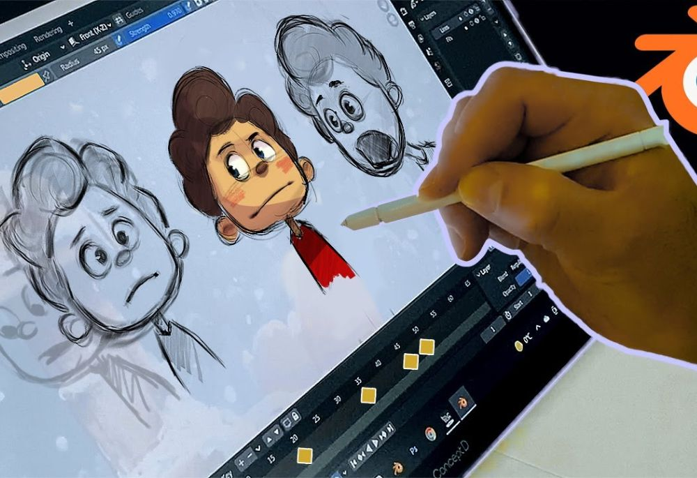

¿Qué son las Producciones Digitales?
Las producciones digitales son creaciones multimedia realizadas con herramientas tecnológicas. Pueden incluir imágenes, videos, audio, animaciones, textos interactivos y más. Estas producciones se utilizan en diversos campos como la educación, el entretenimiento, la publicidad y el periodismo digital.

¿Para qué sirven las Producciones Digitales?
- Comunicación: Transmiten ideas y mensajes de forma clara y atractiva.
- Educación: Facilitan el aprendizaje visual e interactivo.
- Publicidad: Promueven productos y servicios con alto impacto.
- Entretenimiento: Dan vida a videojuegos, películas, animaciones y más.
- Informática: Se usan en presentaciones, aplicaciones, redes sociales, etc.

Tipos de Producciones Digitales
Existen muchos tipos de producciones digitales. Algunos ejemplos son:
Video
Cortos, documentales, comerciales, transmisiones en vivo.
Diseño Gráfico
Logotipos, posters, banners digitales, ilustraciones.

Animaciones
2D, 3D, motion graphics para cine, videojuegos y redes.
Podcast
Grabaciones de audio para información, educación o entretenimiento.
Galería de Proyectos
Video Ejemplo de Producción Digital
Características de las Producciones Digitales
Las producciones digitales se distinguen por su capacidad de combinar diferentes formatos y por su adaptabilidad a múltiples contextos tecnológicos y comunicativos. A continuación, se describen algunas de sus características principales:
- Interactividad: Involucran al usuario mediante enlaces, botones, menús u otros elementos activos.
- Multiformato: Integran texto, audio, video, imagen y animación en un mismo producto.
- Accesibilidad: Se distribuyen de forma digital, por lo tanto son accesibles desde cualquier lugar y en distintos dispositivos.
- Edición flexible: Son fácilmente editables y actualizables sin empezar desde cero.
- Actualización constante: Su contenido puede renovarse periódicamente para mantenerse vigente.
- Escalabilidad: Pueden adaptarse a diferentes audiencias o plataformas sin perder calidad.
Ventajas de las Producciones Digitales
El uso de medios digitales para la creación de contenidos ofrece numerosos beneficios tanto para creadores como para usuarios finales. Estas son algunas de sus principales ventajas:
- Reducción de costos: Crear, editar y distribuir digitalmente suele ser más económico que los métodos tradicionales.
- Mayor alcance: Pueden llegar a audiencias globales con solo unos clics, sin barreras geográficas.
- Medición precisa: Es posible conocer el impacto mediante estadísticas como vistas, clics, descargas y más.
- Difusión rápida: Se pueden compartir fácilmente por redes sociales, plataformas web y aplicaciones.
- Personalización: Los contenidos se adaptan según los intereses, idioma o perfil del público objetivo.
- Compatibilidad: Funcionan en distintos dispositivos, navegadores y sistemas operativos.
¿En qué han ayudado las Producciones Digitales?
Las producciones digitales han impactado profundamente en múltiples áreas. Aquí te mostramos cómo han contribuido en distintos ámbitos:
Educación más accesible y dinámica
Han transformado el acceso al conocimiento mediante plataformas en línea, recursos multimedia, clases virtuales y aprendizaje interactivo. Esto ha facilitado la inclusión educativa en zonas remotas y ha impulsado el aprendizaje autodidacta.
Comunicación más efectiva
Con herramientas digitales, la comunicación se vuelve más clara, visual y rápida. Empresas, instituciones y personas pueden transmitir mensajes usando videos, animaciones e infografías que mejoran la comprensión.
Impulso a la creatividad y expresión artística
Las herramientas digitales han empoderado a creadores a producir música, arte visual, diseño gráfico y contenido audiovisual con recursos accesibles, publicando su trabajo globalmente a través de plataformas digitales.
Desarrollo del marketing y la publicidad digital
Las producciones digitales son esenciales en campañas de marketing modernas. Permiten segmentar audiencias, generar interacción y adaptar los mensajes al entorno digital, optimizando el impacto comercial.
Trabajo remoto y colaboración digital
Han facilitado el trabajo a distancia mediante contenidos interactivos, presentaciones, videoconferencias y tutoriales. Las empresas pueden formar, coordinar y mantener productivos a sus equipos desde cualquier lugar.
Transformación del entretenimiento
Han dado lugar a nuevas formas de entretenimiento como videojuegos, series en streaming, podcasts y experiencias interactivas, accesibles desde múltiples dispositivos, adaptándose al gusto del usuario.
Apoyo a causas sociales y culturales
Las producciones digitales son una poderosa herramienta de concienciación, movilización y educación en torno a temas sociales como derechos humanos, medio ambiente, inclusión y cultura local.
Testimonios
"Las producciones digitales creadas por este equipo transformaron totalmente la campaña de marketing de nuestra empresa. ¡Excelente trabajo y profesionalismo!"
- Ana Pérez, Directora de Marketing
"Gracias a los recursos digitales interactivos, mi aprendizaje fue mucho más dinámico y efectivo. Recomiendo mucho sus servicios."
- Carlos Gómez, Estudiante
"La creatividad y calidad en los videos y animaciones superó nuestras expectativas. Fue una experiencia increíble trabajar con ellos."
- Laura Martínez, Productora audiovisual
Contáctanos
¿Deseas aprender más o necesitas una producción digital para tu proyecto?
Email: contacto@produccionesdigitales.com
Teléfono: +504 1234-5678